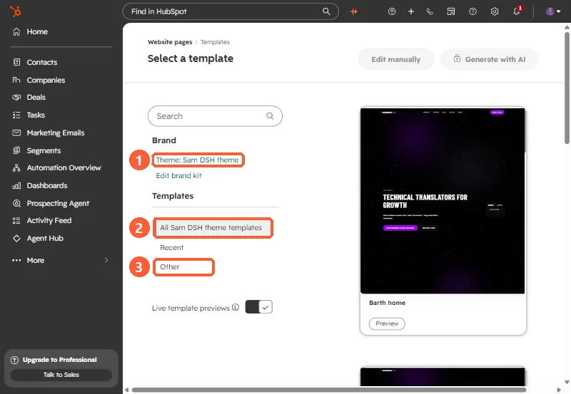
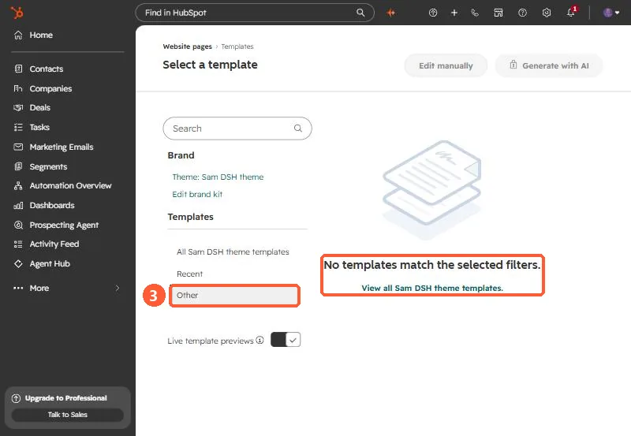
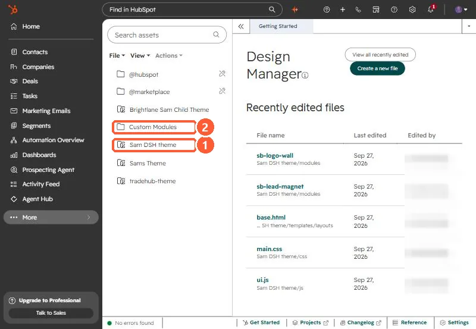

Short answer
The Select a template page opens on your active theme's templates, and its search does not reach outside that view. Templates that are not inside a theme folder (at the Design Manager root or in a plain folder) are listed only under Other in the left menu. If a template is not under Other either, check its annotation: it needs templateType: page and isAvailableForNewContent: true.
Where non-theme templates live in the picker
Go to Website pages or Landing pages and click Create. The Select a template page opens on your active theme, and the left menu has three places to look.


Click Other (3). Any page template that is not part of a theme shows up there. HubSpot's own documentation says it in one line: to use a template that isn't part of a theme, click Other in the left side menu.


The search box at the top of the picker searches the view you are in. From the default theme view, it does not surface templates that sit under Other. Click Other first, then search.
Why your template counts as "Other"
Open Design Manager and look at the folder icons in the left panel. Theme folders have a different icon from plain folders. A template inside a theme folder belongs to that theme. A template at the root, or in a plain folder, belongs to no theme, so the picker puts it under Other.


This is common with agency-built and older sites, where templates were coded before themes existed, or copied out of a theme to make a one-off variation.
Not under Other either? Check the annotation
Every coded template starts with an annotation comment. For a template to be offered when someone creates a page, it needs to be a page template and be available for new content:
<!--
templateType: page
isAvailableForNewContent: true
label: Campaign landing page
-->With isAvailableForNewContent: false, the template is hidden from page creation on purpose. HubSpot uses that setting for partials and templates you only want to apply to existing pages.
Related gotcha: copying a theme template to the root
If you copy a theme template out to the Design Manager root so it shows up under Other, check its first line. Theme templates usually extend a layout with a relative path:
{% extends "./layouts/base.hubl.html" %}At the root, ./layouts/ points to a folder that does not exist. The template renders without its parent layout, every drag-and-drop area disappears, and the page editor reports that the template doesn't allow modules to be added. Point the extends at the theme's layout with a full path from the Design Manager root instead, for example {% extends "/Your Theme/templates/layouts/base.html" %}.